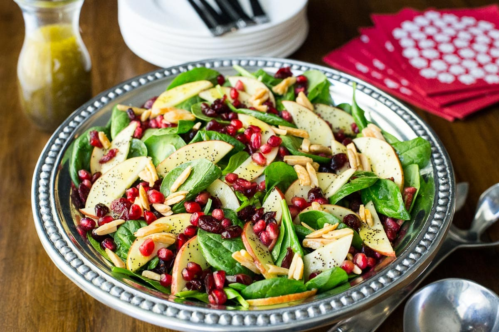

Apple Cranberry Spinach Salad
From apples, spinach, and cranberries to pecans and balsamic vinaigrette dressing, this salad is tangy, scrumptious, and a perfect meal on a summer afternoon.
Prep Time: 30 Minutes
Cook Time: No cooking required for this recipe
Calories: 400 calories per bowl
Ingredients
- 10oz baby spinach
- 2 Granny Smith apples, or any apples, sliced.
- 1 avocado, sliced
- 1 cup of pecan halves
- 2 mandarin oranges, peeled and sliced
- 1/2 cup dried cranberries
- Balsamic vinaigrette dressing
Instructions
- Chop 1/4 cup of pecan halves into smaller bites - set aside.
- In a large bowl, combine all salad Ingredients except for 1/4 cup of chopped pecan halves.
- Drizzle salad with dressing and toss. Finally, sprinkle the pecans onto the salad and enjoy!